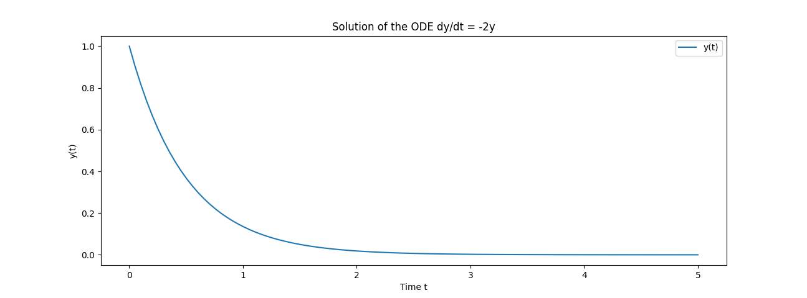
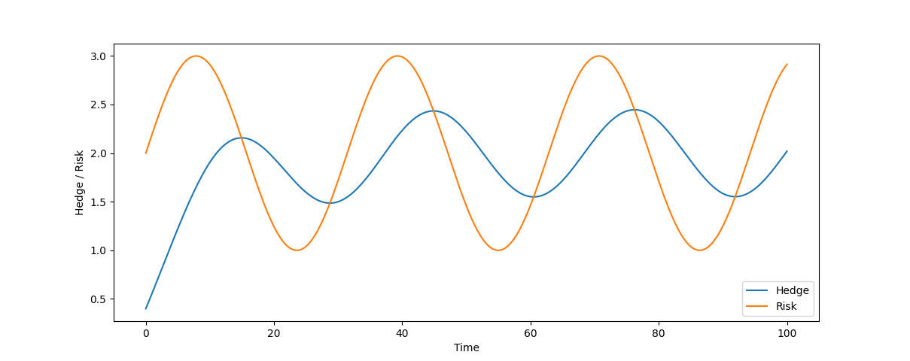

使用 SciPy 的 solve_ivp 建立投資組合調倉策略

避險 = 對時間的微分方程
如果我們假設市場存在一個風險特徵 V(t) ，而我們避險策略是 E(t)
當避險目標和風險特徵吻合， V(t_k) = E(t_k) ，我們在 t=t_k 時點的投資組合不需要調整
如果當風險特徵大於避險策略 V(t_k) > E(t_k) ，需要提高我們的避險幅度 E(t_k+1) > E(t_k)
當風險特徵小於避險策略 V(t_k) < E(t_k) ，需要降低我們的避險幅度 E(t_k+1) < E(t_k)
這樣的概念，就能轉化成一個 ODE： dE(t)/dt = f(t) * ( V(t) - E(t) )
其中的 f(t) 就是應對這個風險特徵與避險目標落差幅度所需的操作
我們就能把任何避險調倉操作，轉換成一個 ODE 問題來求解
SciPy 的 solve_ivp
solve_ivp 是 SciPy 的一個函數，可以基於給定的初始值對 ODE 求解
也就是將 ODE 看成是一個初始值問題1 (Initial Value Problem, IVP) 進行求解 (Solve)
我們可以對 solve_ivp 指定求解的精度，透過使用 numpy 指定涉及變量的網格採樣點
並且也能針對給定位置檢測零值、極值發生的事件，一個簡單的初始值問題如下：
from scipy.integrate import solve_ivp
import numpy as np
import matplotlib.pyplot as plt
# 定義一個 ODE: dy/dt = -2y, 其中初始值條件為 y(0) = 1
y0 = [1]
def odefn(t, y):
return -2 * y
# 定義時間的採樣點範圍，並在該範圍採樣
t_span = (0, 5)
t_eval = np.linspace(0, 5, 100)
sol = solve_ivp(odefn, t_span, y0, t_eval=t_eval)
# 各時間點的對應的解
print(sol.t)
print(sol.y)
# 繪圖
plt.plot(sol.t, sol.y[0, :], label='y(t)')
plt.xlabel('Time t')
plt.ylabel('y(t)')
plt.title('Solution of the ODE dy/dt = -2y')
plt.legend()
plt.show()
求解調倉策略
如果考慮調倉操作為一個固定速度 k ，風險與避險目標差距越大，就要越積極做避險：
dE(t)/dt = k * ( V(t) - E(t) ), k > 0
接著我們就能對風險建模，常用的方法可能是均值回歸的時間序列模型
在此我們以 sin 來示範：
import numpy as np
from scipy.integrate import solve_ivp
import matplotlib.pyplot as plt
def PortfolioDynamics(t, E, k, V_func):
return k * (V_func(t) - E)
def Risk(t):
# 這裡假設風險變化是時間的正弦函數
return 2 + np.sin(t / 5)
# 初始值
k = 0.1
E0 = [0.4]
# 求解 ODE
t_span = (0, 100) # 給定時間範圍
t_eval = np.linspace(t_span[0], t_span[1], 300)
sol = solve_ivp(PortfolioDynamics, t_span, E0, args=(k, Risk), t_eval=t_eval)
# 繪圖
plt.plot(sol.t, sol.y[0], label='Hedge')
plt.plot(sol.t, [Risk(t) for t in sol.t], label='Risk')
plt.xlabel('Time')
plt.ylabel('Hedge / Risk')
plt.legend()
plt.show()
從這張圖可以看到：
- 初始值對初始值問題 IVP 的影響，起始避險目標不足，就得花更大的功夫追上風險特徵
- 由於調倉是基於風險與避險目標的差值做決策，始終落後於風險變化，有週期錯位的感覺
反之亦然：從風險和交易結果，反過來對行為建模
這個 ODE 求解本身並沒有太多厲害之處，但是如果你現在有兩條線，就能反推你的交易行為建模
將你的交易行為還原成一種 ODE，可能不只一階，有二階、三階甚至高階
最常見的就是市場波動度，與你的交易策略在不同波動度底下的交易行為，反過來建模
建模起來就能推測你後續的交易行為，這也可以作為一種對交易結果逆向工程破解交易策略的方法
再一個反之，如果破解不了，就代表沒有蘊含清晰的時變動力系統 (Time-varying dynamics)
可能是基於事件、其他因素做交易，而非簡易的計算邏輯，可能很多交易來自特殊決策
Footnotes
1 初始值問題是微分方程的一種問題，請見:
https://zh.wikipedia.org/zh-tw/%E5%88%9D%E5%80%BC%E5%95%8F%E9%A1%8C